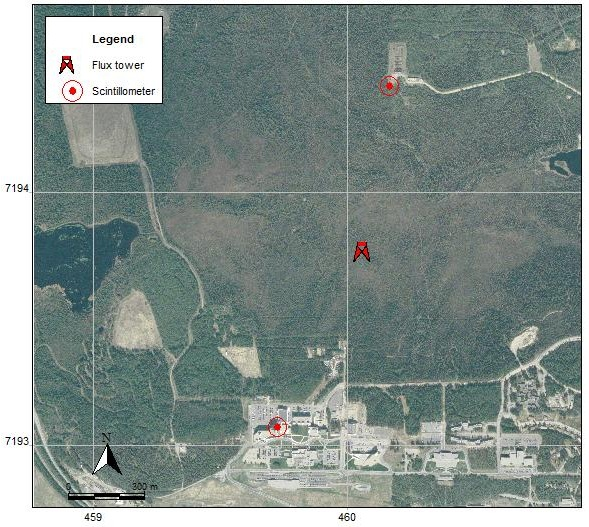

A Critical Component of the Alaskan Water Cycle and Climate Change
| Alaska ET Sites: Issues |
- The NASA MODIS ET product (MOD16) for the state of Alaska does not capture the ET variability in Alaska as it is calibrated with very few field observations.
- To our knowledge, there are at least 15 flux sites in set-up in Alaska of which only 8 are currently active (see table below). Of these 8 sites
- 1 site in Barrow represents an Arctic coastal environment with relatively high humidity and low ET estimates in the summer months.
- 3 sites in Anaktuvuk capture ET values typical for burned areas
- 3 sites in Imanvait provide data for a typical high latitude tundra landscape
- 1 super-site in the Poker Flat Research Range (PFRR) is a site that is set in a tall black spruce setting common in interior Alaska.
| Name of Active Flux Site | CEIP | Latitude | Longitude | IGBP Classification | Period from |
| Anaktuvuk River Moderate Burn | US-An2 | 68.95 | -150.21 | Open shrublands | Jun-08 |
| Anaktuvuk River Severe Burn | US-An1 | 68.99 | -150.28 | Open shrublands | Jun-08 |
| Anaktuvuk River Unburned | US-An3 | 68.93 | -150.27 | Open shrublands | Jun-08 |
| Barrow | US-Brw | 71.32 | -156.63 | Open Shrublands | 1997 |
| Imnavait Creek: Heath Tundra | US-ICh | 68.61 | -149.30 | Open shrublands | Sep-07 |
| Imnavait Creek: Tussock Tundra | US-ICt | 68.05 | -149.28 | Open shrublands | Jan-04 |
| Imnavait Creek: Wet Sedge Tundra | US-ICs | 68.61 | -149.31 | Permanent wetlands | Sep-07 |
| Poker Flat Research Range Super-Site | 65.12 | -147.49 | Coniferous forest | 2008 |
There is a complete lack of a flux site in deciduous forest setting in Alaska, and a clear deficit of flux sites in mixed black spruce settings that is typical the interior Alaska setting of boreal forests underlain by discontinuous permafrost. This project has set up two new flux sites in interior Alaska that are described in further detail in the sections below.
| UAF North Campus Site |
| UAF North Campus site.
Dominant vegetation is Black Spruce. Credits: Chris Wyatt, This Project |
This site represents a typical black spruce forest setting. Black spruce covers nearly half of the forested area in interior Alaska and is most dominant in valleys and north-facing slopes underlain by continuous or discontinuous permafrost. The figure on the left shows the originally proposed location of the flux tower on UAF North Campus.
The proposed location was too close to the Smith Lake and was not ideal as a calibration site for ET modeling based on remote sensing input, as part of the lake area would fall within the satellite pixel and would show ET values lower than representative ET values for similar settings elsewhere.
The figure below shows the exact location of the flux site that we set-up through this project.
- For instrumentation of this site, check instrumentation
- For field photos of the site and towers, check photo gallery
- For first data output, check sample data.
| CPCRW Site |
| BNZ-LTER site. Dominant
vegetation is Birch and Aspen. Credits: Chris Wyatt, This Project |
- This site represents a setting dominated by birch and aspen trees, which are the dominant deciduous tree species in interior Alaska.
- Birch and aspens are common on south-facing slopes with well-drained soils and sparse or no permafrost.
- This site is within the Caribou-Poker Creek Research Watershed (CPCRW), which is part of the BNZ-LTER program.
The figure on the left shows the original proposed site for this flux tower.
The figure below shows the final installed flux tower location. This flux site does not have associated scintillometry data.